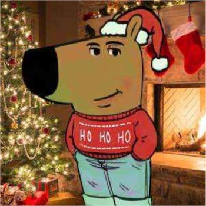

Curious about us?
Martin is a student at the IUT of Aix-Marseille taking a BUT INFO course. He doesn't know what to put in this about section or he doesn't want to speak with you. Don't be sad, you will miss nothing.
Crespo Dimitri has loved cars for a really long time and if he can't complete his bachelor's degree in CS, he will try to become a ralley pilot or a mechanic.

Noiret Maxime has been interested in computers since he was very young and has tried to satiate his curiosity about them since then, only for it to grow further for each thing he has learned. He HATES web development.
And a big thank you to Mickael Martin Nevot for teaching us more things in a month than we've learned in fifteen years of school :)